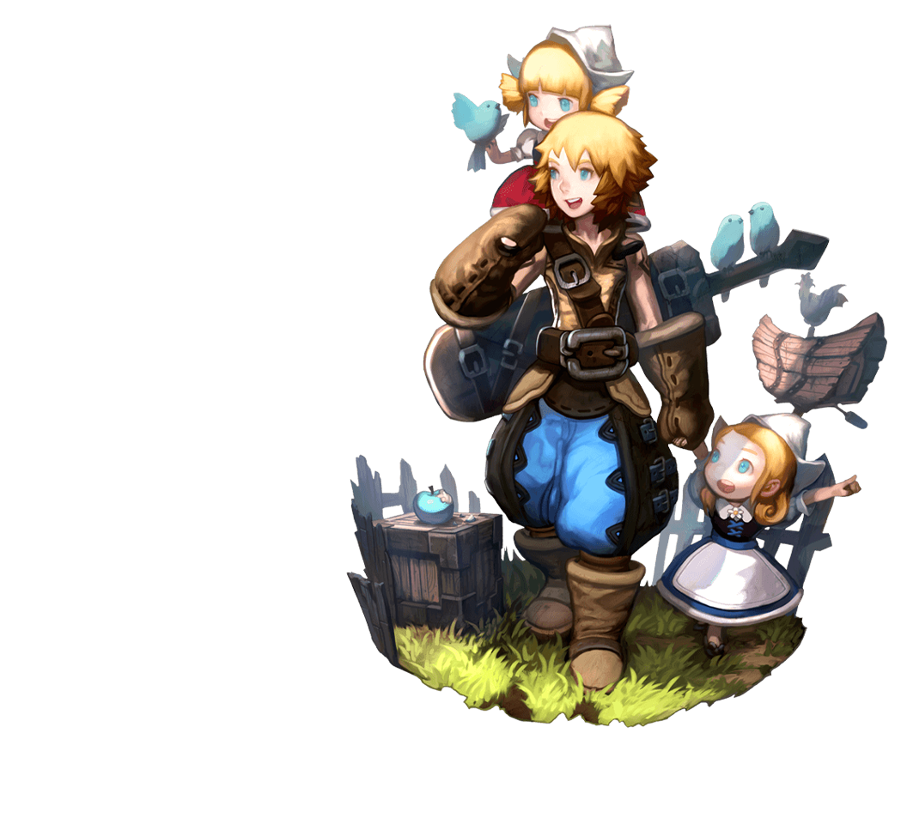
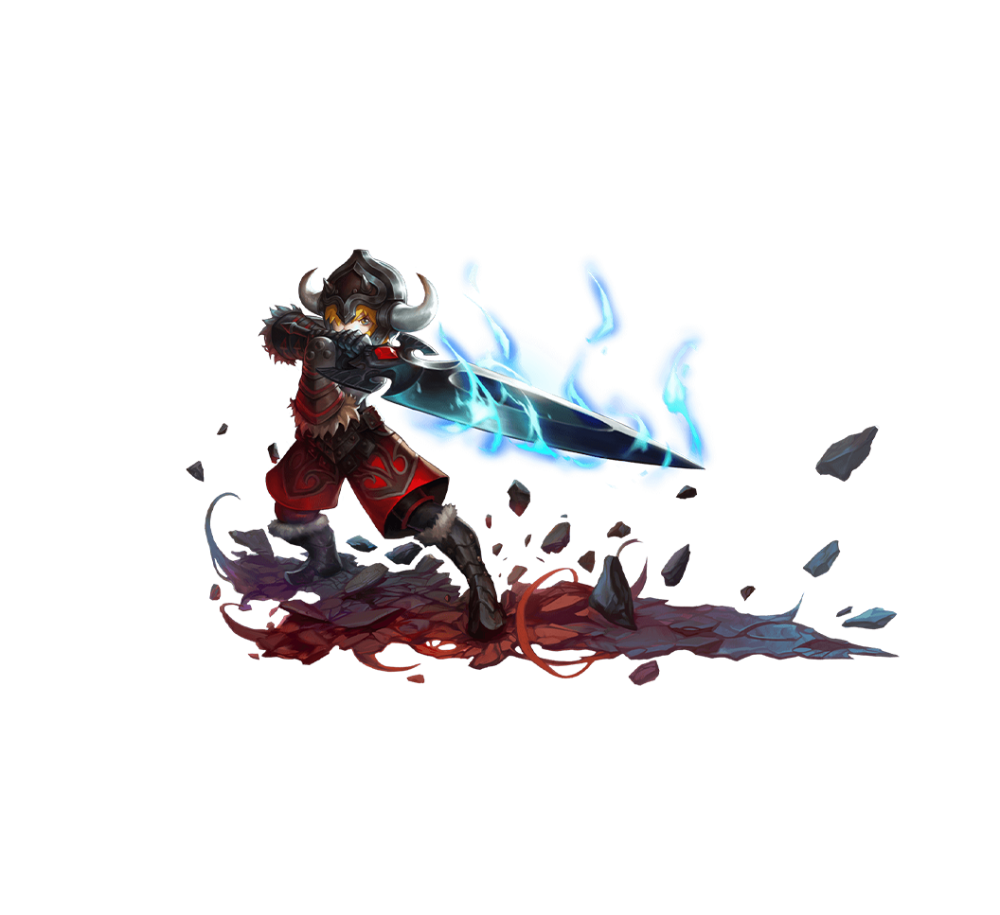

戰士
WARRIOR
戰士是人類中最驍勇善戰的勇士，個性堅韌且驕傲。在50年前的圍剿黑龍戰役中，傭兵聯盟的團長巴爾納召集了疏散在各地的傭兵戰士們，組成了最強大的傭兵團，作為衝鋒第一線的先頭 部隊，與黑龍進行了決戰。
操作難度
使用武器大劍 / 戰斧 / 鐵鎚
擁有強大的近戰攻擊力，活躍於戰鬥的最前方。適合中級玩家。
一轉職業
二轉職業
外傳職業

劍聖
無論距離遠近，從不失手。可以轉職為劍術的集結者劍皇和操縱劍氣的月之領主。主要能力值：力量（物理攻擊力）